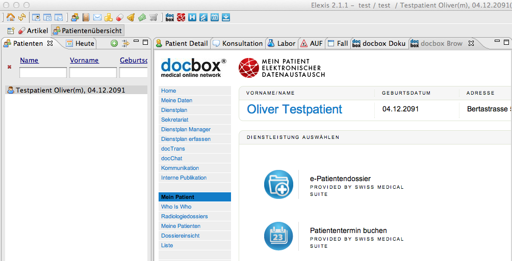

Ch.docbox.elexis
Jump to navigation
Jump to search
Contents
ch.docbox.elexis Plugin
Einführung
Das ch.docbox.elexis Plugin verfügt über die Möglichkeit, aus elexis via der docbox Patienten an Spitäler und Ärzte zu überweisen, Berichte zu empfangen und Termine für Patienten bei anderen Leistungserbringern zu buchen. Termine (Notfalldienst, Ärztebesucherplanung, Terminbuchungen von Patienten, Ärzten), die in der docbox vereinbart wurden, können in die elexis Agenda übertragen werden. Folgende Funktionen unterstütz das Plugin:
- docbox Browser öffnen
- docbox Browser öffnen mit dem aktuell gewähltem Patienten im elexis
- Patient an Spital überweisen
- Patient an Arzt überweisen
- Patiententermin vereinbaren
- Berichte, Kopien Überweisungen & Termine aus docbox in elexis herunterladen
Das Plugin stellt zwei neue Sichten zur Verfügung, die docbox Browser sowie die docbox Dokumente View.

Mit der docbox Browser View können die einzelnen Prozesse innerhalb der dobox mit dem gewählten Patienten ausgeführt werden.
In der docbox Dokumentenview werden die empfangenen Dokumente aus der docbox angezeigt.
Neue Features im Plugin 2.1.6 in Zusammenarbeit mit argomed AG / visionary AG
- Drag and Drop von der DokumentenView ins Omnivore (setzt das Omnivore PlugIn voraus)
- Erweiterte Datenübernahme in Elexis für die Spitalanmeldung in docbox
- Einstellungen der docbox Verbindungskonfiguration auf Mandantenebene anstelle Anwenderebene. (Für die Kalenderdaten könen optional auch noch Agenden pro Anwender definiert werden).
- Neue Icons / hCard Integration (bei Interesse zum Einsatz der HPC Karte bitte visionary AG kontaktieren)
- Verfügbarkeit des Plugins als OpenSource
Installation
Falls noch kein Zugang zu docbox besteht, kann dieser bei visionary AG angefordert werden.
- Gehen Sie auf www.docbox.ch und klicken Sie auf docbox login.
- Folgen Sie den Anweisungen zum erstmaligen Einloggen auf dem Passwortbrief. sonst: Login mit Ihrer bestehenden docbox Login ID und Passwort
- Klicken Sie links im Hauptmenue auf “docbox Dienstleistungen” und aktivieren Sie
- “Elektronische Kommunikation mit Spitälern” und
- “Elektronische Überweisungen von Arzt zu Arzt”.
- Die “Arzt-Patient Terminvereinbarung” müssen Sie nur anklicken, falls Sie Patiententermine für andere Kollegen zum Buchen freigeben möchten.
Einmalige elexis Einstellungen
- Ö̈ffnen Sie elexis und wählen Sie im Hauptmenu unter “elexis” den Menuepunkt “Einstellungen”/" Anwender"/“docbox Einstellungen”. Sie brauchen Adminrechte für den Mandant um die Einstellungen zu ändern.
- Geben Sie hier die docbox Login ID und das docbox Passwort (allenfalls auch notwendendiger Produktschlüssel) ein und klicken Sie auf “Test docbox Verbindung” Konfiguration. Es sollte “ok” erscheinen.
- Konfigurieren Sie sich unter “Fenster”/“Ansicht”/“andere” die beiden Fenster “docbox Browser” und “docbox Dokumente” hinzu
Zusätzliche Informationen für Entwickler/Tester
- Ein Login für das Testsystem kann bei techsupport@visionary.ch beantragt werden.
- Für das Testsystem ist die LoginID mit TEST_ zu prefixen in der Login ID Einstellung.
- Voraussetzung für das Plugin ist, dass das elexis-agenda Plugin installiert ist.
Source org.hl7.v3
Die docbox Schnittstellen beruhen auf dem CDA R2 Standard von hl7 (2005 Normative edition of the Health Level Seven Clinical Document Architecture Release 2 (HL7 CDA R2) publiziert im Herbst 2005). Die offizielle Dokumentation ist unter www.hl7.org erhätlich. Die Dateien im Package org.hl7.v3 sind aus dem CDA R2 Schema automatisch genereriert worden.
| Version: | |
| Kategorie: | |
| Beschreibung: | |
| Author: | |
| Letzte Bearbeitung: | |
| Voraussetzungen: | |
| Betriebssystem: | |
| Lizenz: |
Konfiguration
ToDo
Einführung
ToDo
Funktionen
ToDo
ev andere Untertitel
ToDo
=